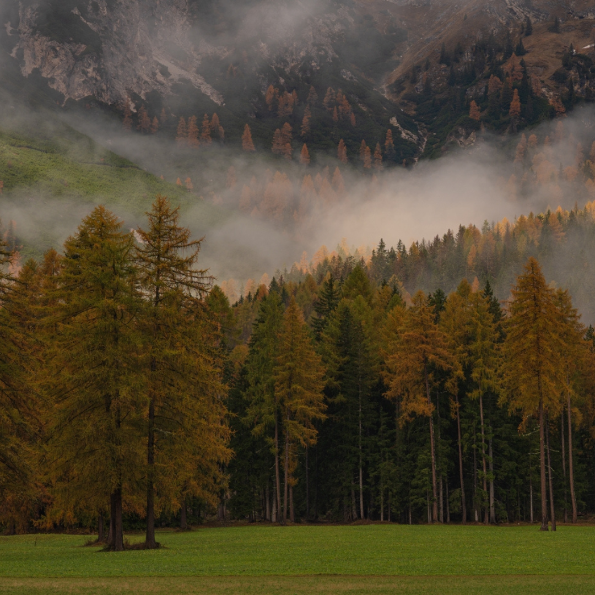
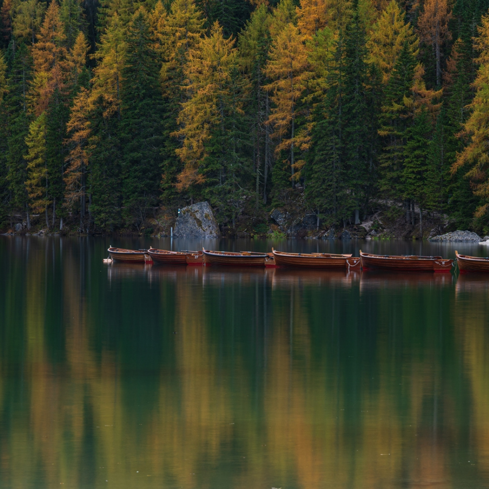
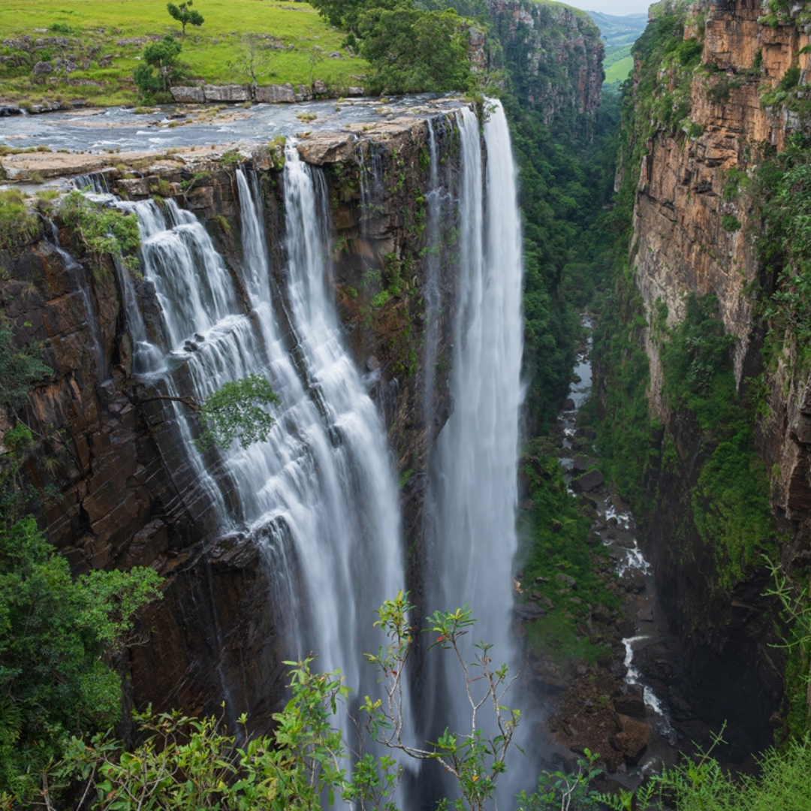

Misty TreesNature Photography
Where The Wild Becomes Art
See the wild as it truly is - raw, beautiful, unpredictable and alive. Through wildlife and nature photography, Dale Keth transforms fleeting moments in the natural world into lasting images that inspire connection and wonder.
BookWhether you're looking for a personal photoshoot, a wildlife photography workshop, or a nature photography tour, Dale Keth offers a range of services to suit your needs. Book your session today and capture the elements like never before.

Misty TreesNature Photography

Quiet LakesNature Photography

Rushing WaterfallsNature Photography
Dale Keth is a passionate wildlife and nature photographer with over a decade of experience capturing the beauty of the natural world. His work has been featured in numerous publications and exhibitions, and he is dedicated to inspiring others to connect with nature through his photography.